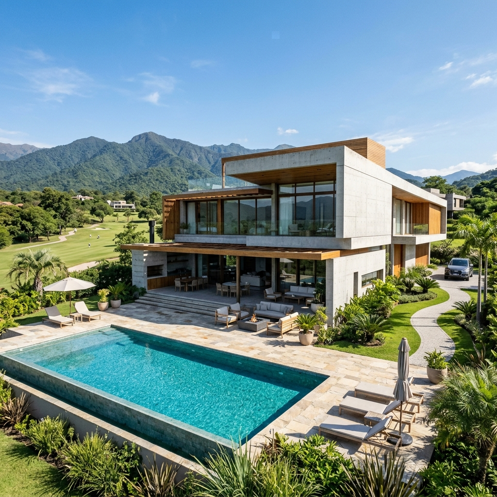
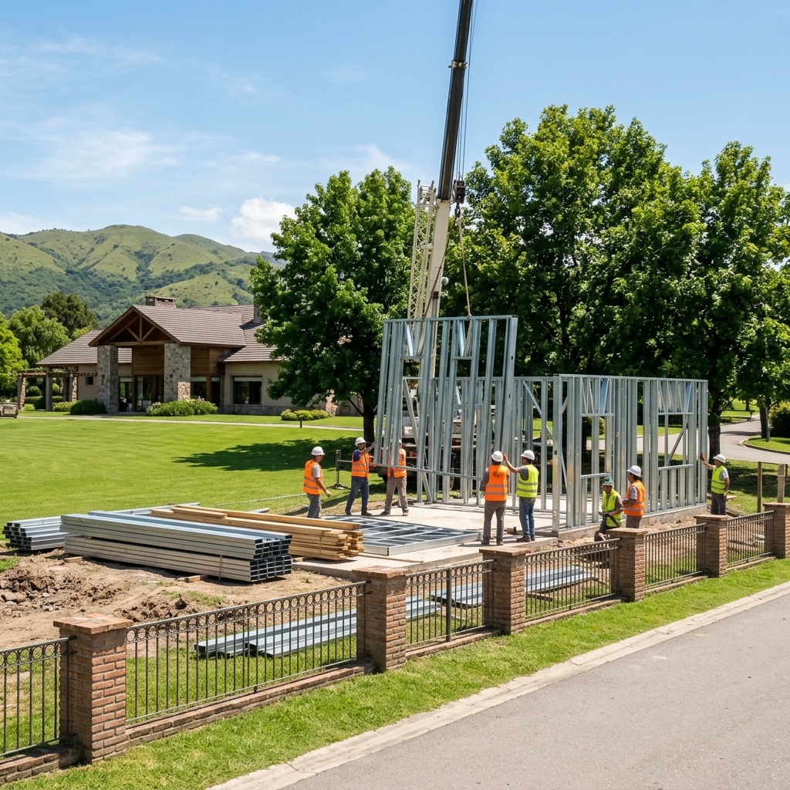

Mejores Constructoras de Casas de Country en Tucumán
Las mejores constructoras de casas de country en Tucumán se diferencian por su capacidad para cumplir con los estrictos reglamentos de edificación internos y gestionar la logística de ingreso en barrios cerrados. Constructora ByB provee un servicio llave en mano premium optimizado para countries en Yerba Buena y San Pablo.
Para planificar correctamente una obra residencial en la provincia de Tucumán, el análisis de las opciones disponibles y su estructura técnica es clave. A continuación, te presentamos un panel de comparación interactivo y las especificaciones técnicas completas para que elijas con total seguridad.
Panel Interactivo de Decisión
Selecciona un criterio de comparación para ver el rendimiento:
-
-
Tabla Comparativa de Soluciones
| Criterio de Elección | Constructora Premium (ByB) | Constructora Comercial | Contratistas por Gremio |
|---|---|---|---|
| Gestión de Aprobaciones | Comisión de Arquitectura y Municipalidad (Incluido) | Solo planos municipales | El cliente debe gestionar todo |
| Seguridad de Personal ART | 100% en regla (Requisito de ingreso de countries) | Parcialmente en regla | Alto riesgo legal para el dueño |
| Plazos de Obra | 4 a 6 meses (Steel Framing) | 10 a 14 meses (Tradicional) | Indefinido (+18 meses) |
Logística Limpia y Cumplimiento Normativo en Countries
La construcción dentro de un country club o barrio privado está sujeta a horarios estrictos para evitar ruidos molestos a los vecinos, límites de peso para camiones que no dañen el pavimento y rigurosos controles de seguridad en el ingreso para todo el personal de obra.
El sistema Steel Framing de ByB se destaca como la solución logística ideal: al ser un montaje en seco, se reduce en un 80% el tránsito de camiones pesados y trompos de hormigón, no se generan nubes de polvo y la obra permanece limpia, ordenada y silenciosa, evitando multas del consorcio.

Perfiles de Alternativas del Sector
Constructora ByB
Construcción premium llave en mano en countries de Yerba Buena y San Pablo con dirección permanente de arquitectos.
- check_circleLogística limpia en seco
- check_circleART y seguros 100% en regla
- check_circlePlazos de entrega garantizados
Constructoras de Ladrillo
Constructoras de obra húmeda que requieren largos plazos de ejecución y acopio masivo de materiales.
- check_circleObra ruidosa y con escombros
- check_circlePlazos extendidos de 1 año
- check_circleCosto variable por acopio
Albañiles Particulares
Contratación informal por jornal o gremio que suele tener dificultades para cumplir con los ingresos y seguros del country.
- check_circleMultas recurrentes del consorcio
- check_circleRiesgo de juicios laborales
- check_circlePlazos impredecibles
Preguntas Frecuentes Relacionadas
Los countries tienen portales de acceso de proveedores donde se exige la acreditación de identidad de cada obrero, la presentación mensual de la póliza de ART al día y la constancia de pago de cargas sociales. Para camiones pesados, se asignan días y horarios específicos, y en épocas de lluvia se suele prohibir el ingreso para evitar romper las calles de asfalto interno.
Es un monto en efectivo o pagaré que el propietario debe entregar a la administración antes del inicio de la obra. Este depósito garantiza que, si los obreros o camiones de la obra rompen cordones, veredas, pavimentos o postes de luz del country, el consorcio utilizará esos fondos para su reparación. Con ByB minimizas este riesgo debido a nuestra logística de montaje limpia y ordenada.
Depende de cada reglamento interno. Algunos exigen techos inclinados con tejas en un porcentaje de la superficie, mientras que los countries más modernos permiten techos planos y estéticas minimalistas de hormigón visto. En ByB adaptamos el diseño arquitectónico de tu casa moderna para cumplir exactamente con la normativa estética del barrio.
¿Listo para hacer realidad tu proyecto de vivienda?
Obtenga un presupuesto cerrado llave en mano, con plazos de entrega garantizados por contrato y calidad premium certificada bajo normas sismorresistentes.